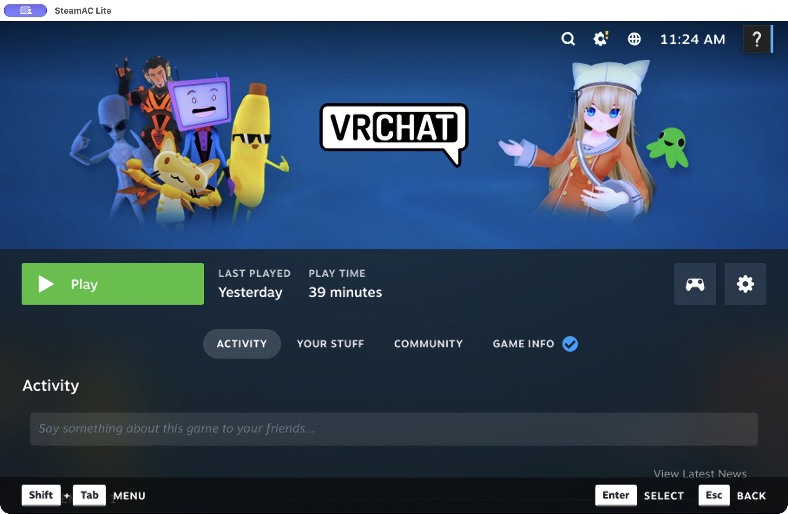
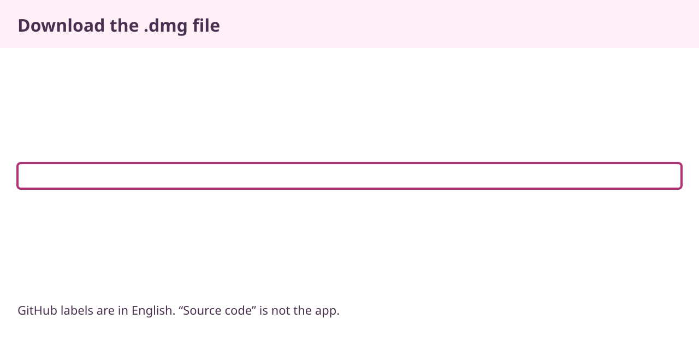
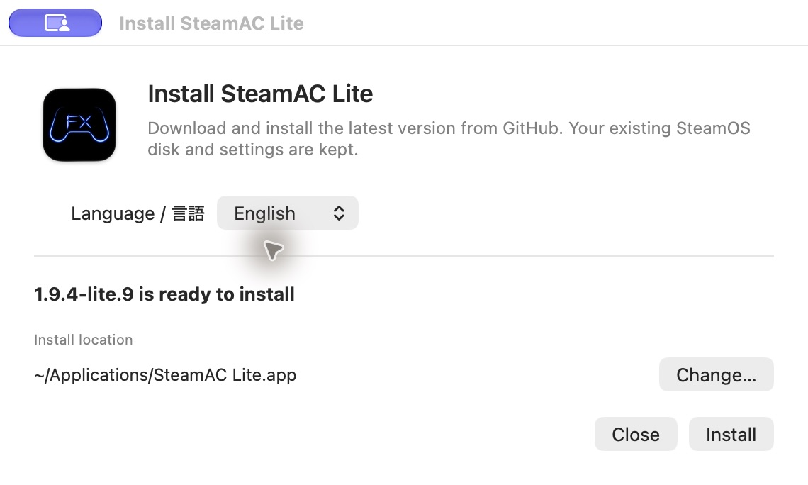
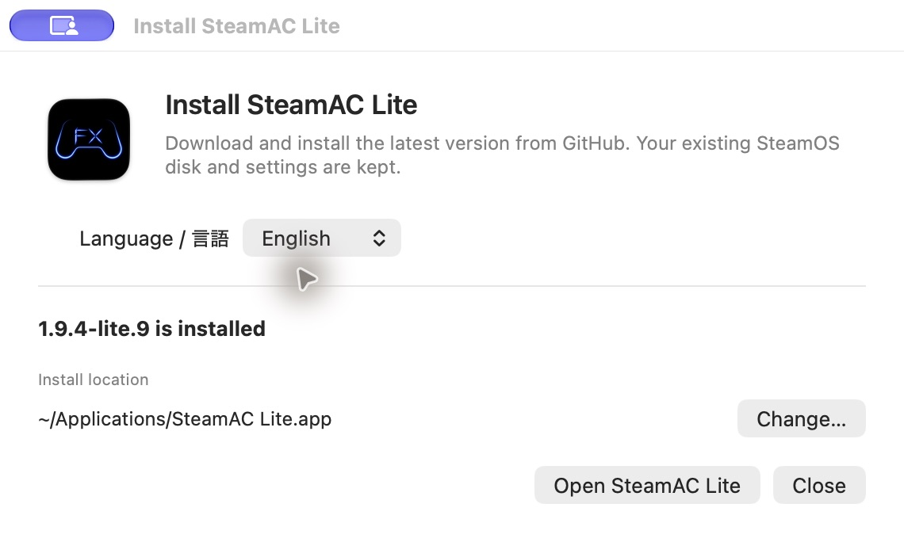
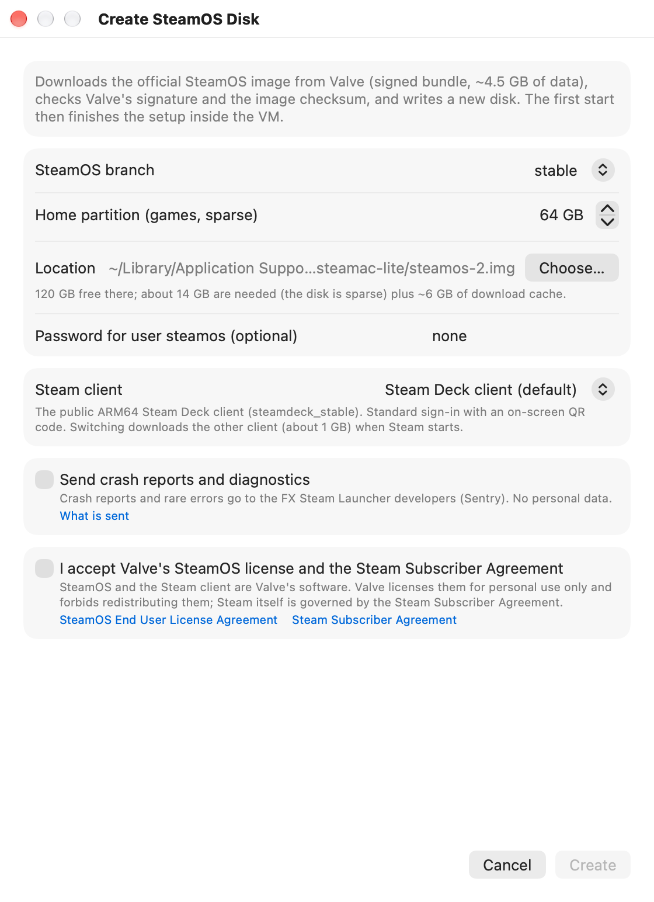
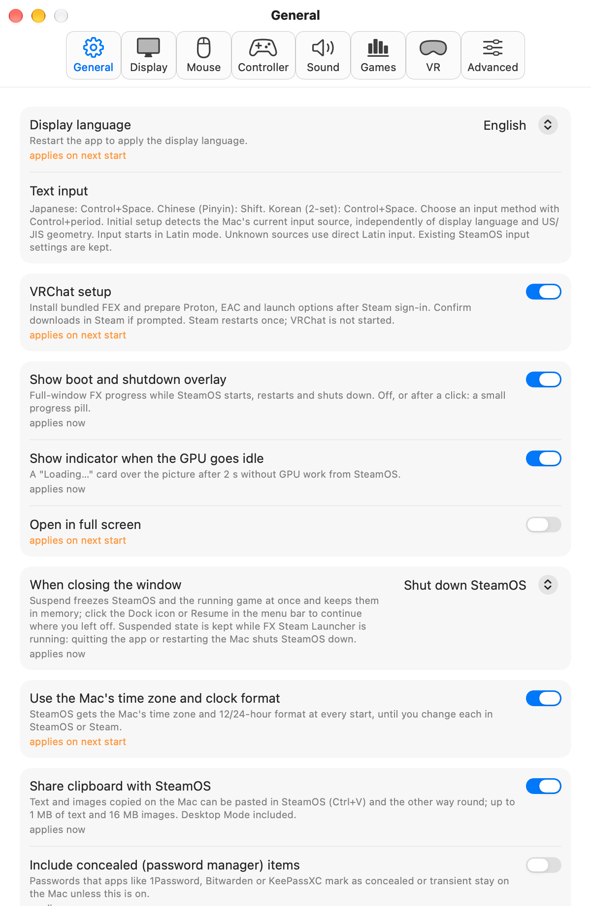
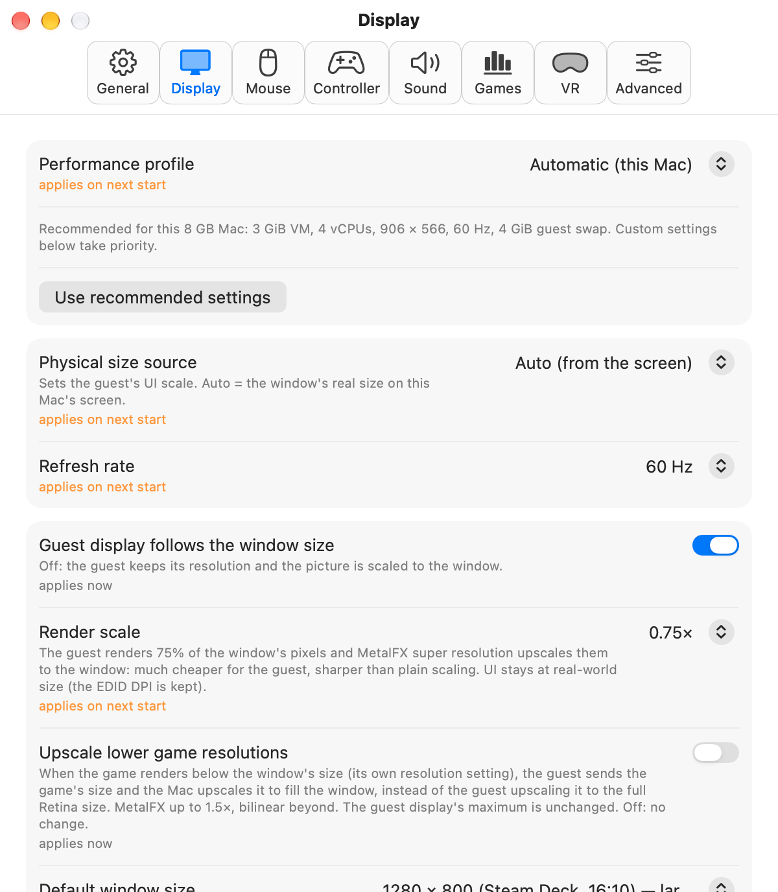

Download and setup
steamac LiteSetup guide
Follow the screenshots to download steamac Lite and configure it for VRChat.

Enlarge screenshot ↗Before you start
What you need
- Mac
- Apple Silicon (M1 or later)
macOS 15.5 or later · At least 8 GB RAM - Free storage
- About 20 GB for setup
Plus room for games and swap - Internet and account
- Internet to download SteamOS and games
Your own Steam account
Intel Macs are not supported. steamac Lite runs SteamOS in a virtual machine on your Mac. Creating swap for the 8 GB profile requires at least 8 GiB free on both the Mac and the SteamOS disk.
Download the app
Download the DMG
Use the DMG below to download directly from GitHub. If you use BOOTH, follow the subsection below instead.
Select “Download for Mac”. On the GitHub release page, open Assets and choose the file ending in .dmg.
SteamAC-Lite-1.9.4-lite.13-macos-arm64.dmg
Download for Mac

Enlarge screenshot ↗If you download from BOOTH
BOOTH provides a small online installer. It gets the latest app from GitHub when you install. An internet connection is required.
Open the BOOTH product page ↗- Download the installer ZIP
On the product page, choose 無料ダウンロード (Free Download) to save the installer ZIP.
- Extract the ZIP and open the installer
Double-click the ZIP to extract it, then open Install SteamAC Lite.app inside. Check the language and install location. Use Change… to choose another folder.

Enlarge screenshot ↗The English installer. Check the language and location, then choose Install. - Choose Install and wait for it to finish
The installer downloads and verifies the latest app, then installs it. You do not need to open a DMG or drag the app into a folder.

Enlarge screenshot ↗Installation is complete. Choose Open steamac Lite to continue in the app. - Choose Open steamac Lite
Once the app opens, continue with the display language step below. SteamOS and games are downloaded later through the app.


If the latest version is already installed, you can open it without downloading it again. Your existing SteamOS disk and settings are kept.
This experimental build is not notarized by Apple. Check where you downloaded it from and follow Apple’s instructions for opening apps safely to approve it yourself.
Continue to 03: Choose a language →Install on your Mac
Install the app
Open the downloaded DMG, then open steamac Lite inside it. Choose Install and Open to copy the app to Applications and launch it. You can also drag the app into Applications as shown below.
 Enlarge screenshot ↗
Enlarge screenshot ↗If macOS asks for confirmation
This experimental build is not notarized by Apple. Check where you downloaded it from and follow Apple’s instructions for opening apps safely to approve it yourself.
App language
Choose a display language
The first time you open steamac Lite, you will see “Choose a language”. Select English and choose Continue.
The app’s settings and menus will use English. On a new SteamOS disk, Steam will also start in English.
Steam keeps its existing language. You can change it in Steam’s Settings.
If prompted, choose Allow Microphone… and allow access in the macOS dialog. If access is denied, choose Open Microphone Settings…. If the microphone stops working after an update, try turning this app’s microphone permission off and on again. You can also check access in the app’s Settings → Sound.
Prepare the Steam environment
Create a SteamOS disk
Choose “Create New Disk…”. You can leave the branch and Steam client at their defaults. Check the storage size for games and the save location before continuing.


Enlarge screenshot ↗Check these items
- Game storage
The home partition stores games and other data. The screenshot shows a 64 GB example. - Terms
Read the terms. If you agree, select the checkbox and choose Create. - Wait for the downloads
SteamOS setup and Steam’s initial download proceed automatically.
You can also select an existing disk. To test a copy while preserving the original, shut down SteamOS before copying the disk and select the copy.
FEX, Proton and launch options
Configure VRChat setup
“VRChat setup” is enabled by default on the first-run screen. You can also find it under Settings… → General.


Enlarge screenshot ↗- Sign in to Steam
Sign in with your own account in the Steam window. Enter your password and complete Steam Guard yourself.
- Confirm the installations
The app prepares FEX-Emu, Proton Experimental and Proton EasyAntiCheat Runtime in order. When Steam asks for confirmation, review it and confirm the installation.
- Wait for setup to finish
After the downloads, the app applies the extra settings and restarts Steam once. When “VRChat setup is complete” appears, continue to the next step.
The app installs the compatible FEX runtime and sets Proton and launch options for VRChat. You handle sign-in and Steam’s confirmation screens. VRChat does not start automatically.
Install VRChat
Install VRChat in Steam
Find VRChat in Steam and install it. Once the download finishes, select Play to start it yourself.

Automatic VRChat setup does not guarantee that other games will work. Game purchases and acceptance of terms take place in the respective services.
Japanese, Chinese and Korean input
The app detects the physical US/JIS keyboard layout. Japanese, Chinese Pinyin and Korean 2-set input use engines already included in SteamOS. No extra download is needed.
Control＋Space
Spaceto convertEnterto confirm
Initial setup detects the Mac’s selected input source separately from the display language and US/JIS geometry. ABC or US selects direct Latin input. Supported Japanese, Pinyin and Korean 2-set sources select the corresponding method, starting in Latin mode. Unknown sources use direct Latin input. Choose a method with Control+period, then toggle Chinese with Shift or Japanese/Korean with Control+Space. Existing SteamOS input settings are kept. JIS Kana/Eisu keys work with Japanese input. After changing an external keyboard, restart the app to detect its layout again.
Memory and resolution
The app chooses memory and resolution based on your RAM and display. Macs with 8 GB use lighter defaults. Higher-memory Macs can use higher resolutions.
Check Settings… → Display → Performance profile. Values you select manually take priority.
The default display refresh rate is 60 Hz. This does not guarantee 60 fps in games. Changes apply the next time the app starts.
View profiles by Mac specification (Japanese) ↗
Enlarge screenshot ↗Frequently asked questions
Will it run on a Mac with 8 GB RAM?
A lighter profile is available for 8 GB Macs. The developer tested new-disk creation, VRChat setup and VRChat itself on their own M1 Mac with 8 GB RAM. Heavy worlds and avatars, long sessions and compatibility with every Mac have not been verified.
Steam is not in my preferred language
Existing disks keep Steam’s language setting. Choose your preferred language in Steam’s Settings and follow its instructions to apply it. New disks created with Lite.5 or later use the language selected during the app’s first-run setup.
Do I need to select Proton or enter launch options?
With “VRChat setup” enabled, the app applies the extra settings. You still sign in to Steam and confirm the installations. Existing custom settings are not replaced without confirmation. See configuration and restore instructions (Japanese).
Can I keep my original SteamOS environment?
Creating a new disk gives you a separate environment. Selecting the original disk applies changes to that disk. To test a copy, shut down SteamOS before copying. Do not open the same disk in multiple VMs at once.
What was used to test this guide?
The guide was checked on November 2, 2026 using an Apple M1 Mac with 8 GiB RAM and macOS 27.2. The fresh-install test covered the tool downloads and completion of the extra setup. It did not start VRChat. See the test record and limitations (Japanese).
How do I update the app?
Lite.9 and later notify you about new releases in the app. Choose Update to download, then Install and Relaunch to apply it. Your SteamOS disk and settings are kept. Lite.8 and older need one manual upgrade using the DMG on this page first.
Download steamac Lite
No build or command-line steps required.